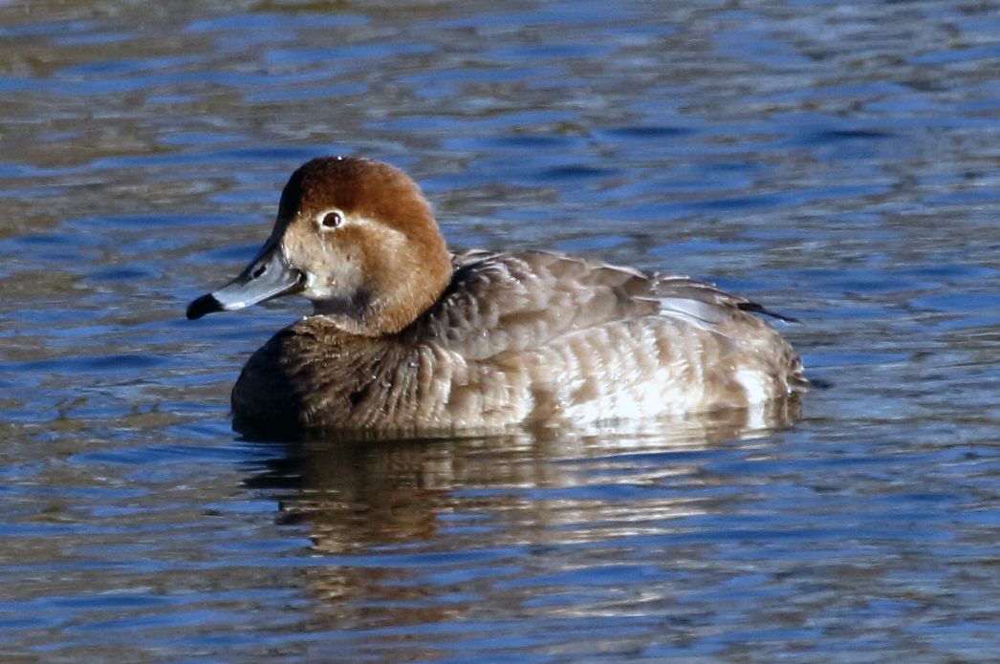
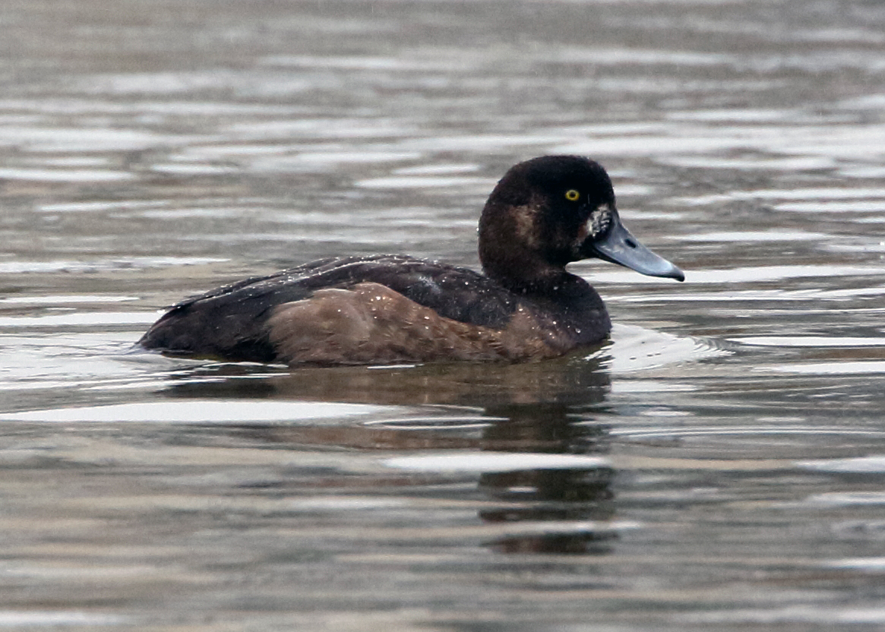

How do we identify species from their wings?
The Waterfowl Diary Survey only asks about harvest of ducks, geese, sea ducks, and brant. Why? However, it is possible to identify duck species from their wing plumage and geese from their tail feathers. The US Fish & Wildlife Service has created a series of videos on duck identification using wing feathers. The following video is the first in the series, and shows you how to tell a female "hen" mallard from a male "drake" mallard that doesn't have its bright breeding plumage (i.e., hasn't "colored up") yet, just by looking at their wings.

But first, click on the image to the right to learn the different feather groupings of a wing that are key to identifying duck species! This graphic is helpful when distinguishing between species as shown in the various videos on this page. See further down on this page for other videos in the series about duck species identification using wings.


The Waterfowl Parts Collection Survey randomly selects 5-6,000 waterfowl hunters to send us a wing from every duck, and tail feathers from every goose, they shoot during the hunting season. This survey tells us the species composition of each state's duck and goose harvests. The image to the left shows the postage-paid envelope the selected waterfowl hunters send us for every individual bird they shoot during the hunting season. Once we receive the envelopes, biologists and volunteers gather together and sort through the wings and feathers to identify the species. The image above and to the right shows a stack of received envelopes and a duck wing ready for identification.
We combine Parts information with the estimates of harvest from the Diary Survey to get estimates of how many birds of each species were harvested. We can also identify the sex of a duck from its wing, and whether it was a young-of-the-year bird or an adult. The ratio of young-of-the-year birds to adults gives a good measure of the production of each species compared to previous years. That, in turn, helps biologists keep track of how waterfowl populations are faring. The USFWS also measures annual production of dove, woodcock, and band-tailed pigeons with Parts Collection Surveys.

Duck wing identification can be a handy skill when you're having a good day in the duck blind, since you're only allowed to shoot one or two of some species. Male ducks are usually (but not always) easy to identify, but young-of-the-year females of several species are pretty drab "brown ducks" and look similar.
What is the duck on the right? Click the binoculars to find out the answer!

What about the one on the left? Do you have to worry about the next bird you shoot if you have already bagged one of these? The next video in the series shows you how to identify several "brown ducks" of different species by their wings. Remember to use the the wing feather groupings image above to help with species identification.

The duck to the left is another female; do you know what species? To differentiate between similarly colored redheads and canvasbacks, we use not only the wing, but also the shape of the head and bill.

The bird on the right is a female scaup, but can you tell which of the two species (greater or lesser) is pictured? Scaup species can be difficult to identify, particularly with nothing to compare against. But by looking at the color of the primary wing feathers, we can determine the correct Scaup species.
Here is another video demonstrating how to distinguish between several diving duck species (including scaup, ring-necked duck, redhead, and canvasback) using wings and wing feathers. Don't forget to use the wing feather groupings image at the top of this page for reference.
This content was developed through a collaboration between staff from the USFWS Migratory Bird Program and USGS Patuxent Wildlife Research Center. The project was kicked off at an internal 2017 National Civic Day of Hacking event held at PWRC. Participants included Tony Bethea, Theo Burton, Tony Celis-Murillo, Chris Deets, Rob Fowler, Pam Garrettson, Kayt Jonsson, Jenn Malpass, Derek Masaki, Paul Padding, Bob Raftovich, Becky Rau, Emily Silverman, Alli Sussman, Khristi Wilkins, and Nathan Zimpfer.
Last Updated: October 18, 2018.